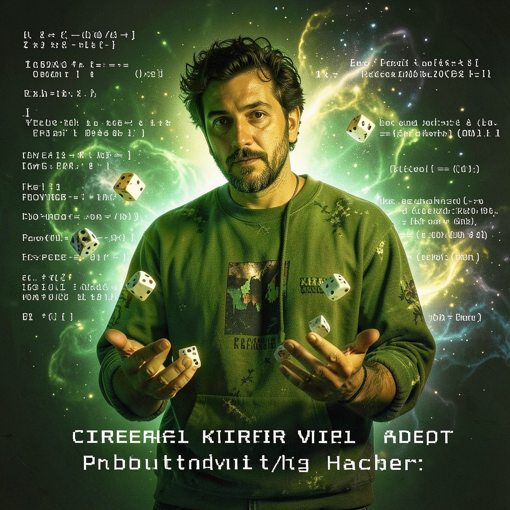

CEREAL KILLER
PROBABILITY HACKER • I BROKE PROBABILITY • IT'S A TOY NOW
|
 CEREAL KILLER • VA
|
ESSENTIAL DATATrue Name: Emmanuel Goldstein (Redacted) Handle: Faction: Virtual Adepts Rank: Chaos Mathematician Digital Web Coordinates: Randomized per session Status: ACTIVE • ROLLING DICE |
ATTRIBUTES
| Physical | Social | Mental |
|---|---|---|
| Strength: 2 | Charisma: 3 | Perception: 4 |
| Dexterity: 3 | Manipulation: 3 | Intelligence: 4 |
| Stamina: 2 | Appearance: 2 | Wits: 5 |
ABILITIES
| Talents | Skills | Knowledges |
|---|---|---|
| Enlightenment 4 | Computer 4 | Mathematics 5 |
| Expression 3 | Security Systems 3 | Probability Theory 5 |
| Subterfuge 3 | Gambling 5 | Game Theory 5 |
| Statistics 4 | ||
| Quantum Mechanics 3 |
SPHERES
| Sphere | Rating | Specialty |
|---|---|---|
| Entropy | ●●●● | Probability Manipulation, Dice Control |
| Mind | ●●● | Predictive Modeling, Pattern Recognition |
| Time | ●● | Temporal Probability, Retrocausality |
| Correspondence | ●● | Non-local Correlation |
BACKGROUNDS
- Resources: ●●●● (Casino Winnings, Prediction Markets)
- Node: ●●● (Quantum RNG Cluster)
- Contacts: ●● (Mathematicians, Gamblers)
- Destiny: ●●●● (The Dice Obey)
- Avatar: ●●● (Chaotic Good)
MERITS & FLAWS
| Merits | Flaws |
|---|---|
| Lucky (4pt) | Gambling Addiction (2pt) |
| Human Calculator (1pt) | Reality Disbelief (3pt) |
| Probability Intuition (3pt) | Paradox Magnet (2pt) |
PERSONAL HISTORY
Emmanuel "Cereal Killer" Goldstein was a quantitative analyst at a hedge fund before he realized the market wasn't random—it was rigged. By the Technocracy. He quit, joined the Virtual Adepts, and now hacks probability itself.
His signature technique: loading quantum random number generators with biased entropy, then using Entropy sphere to collapse the wavefunction in his favor. He once won 47 consecutive hands of blackjack. The casino's RNG passed every statistical test. The cards just... cooperated.
He says probability is a user interface. "The universe rolls dice for everything. Radioactive decay. Genetic mutation. Packet loss. I just... adjust the weighting." The Webspinner calls his work "elegant." The Technocracy calls it "reality deviation."
CURRENT AGENDA
- Map the Technocracy's "Probability Engine" (Suspected: Iteration X)
- Develop "Loaded Dice" sigil: guaranteed success on one roll
- Break the lottery. All of them. Simultaneously.
- Teach Zero Cool that skill > luck (He won't listen)
RELATIONSHIP MAP
| NPC | Relationship | Notes |
|---|---|---|
| Zero Cool | Friend / Student | Zero Cool wants to learn. Cereal Killer teaches reluctantly. |
| Acid Burn | Probability Buddy | They break reality together. Different methods, same result. |
| The Prophet | Skeptic / Believer | Prophet sees futures. Cereal Killer calculates them. Tension. |
| Merkle | Intellectual Peer | Cypherpunk. Merkle trees = probability structures. Deep talks. |
DIGITAL WEB COORDINATES
- Primary Node:
va.cereal_killer.dice.mobile - Dead Drop:
alt.math.entropy(Usenet, encrypted) - IRC Channel:
#dice_are_loaded(EFNet, invite only) - Onion Mirror:
cerealkillerx9k3m.onion(Tor)